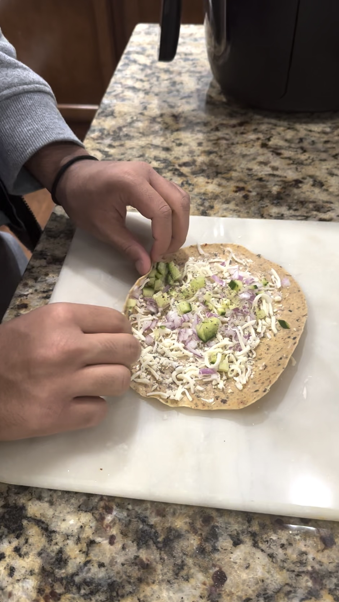
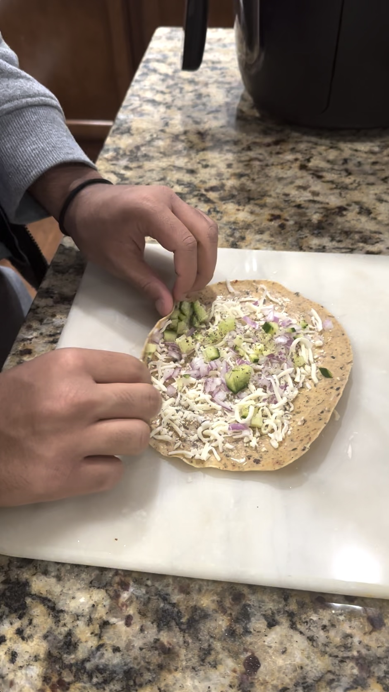
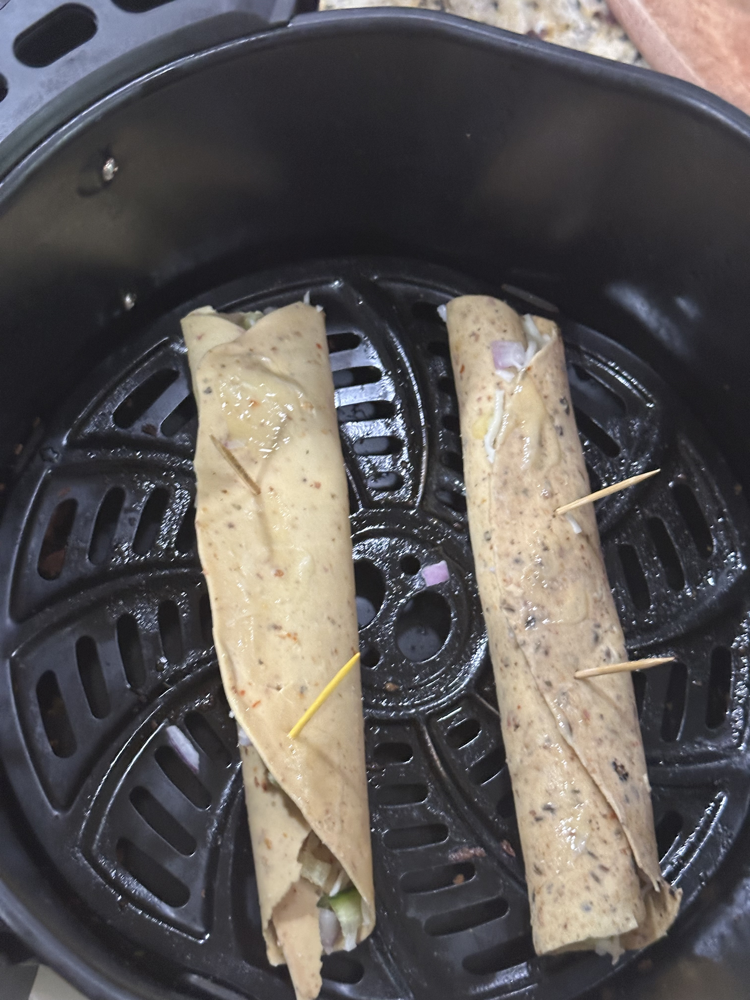
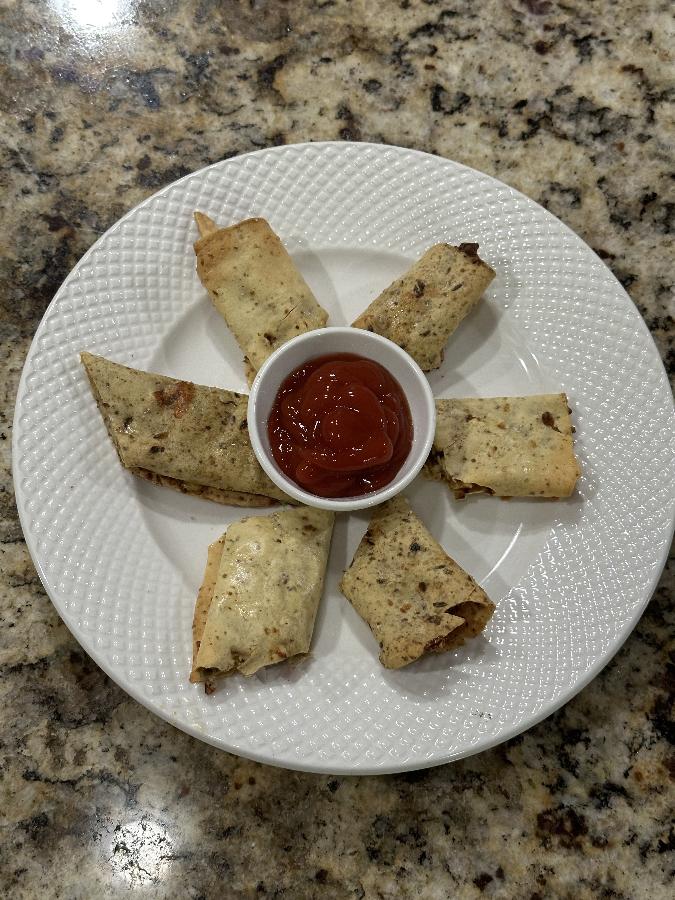

Crispy Cheese Papad

What is it?
This crispy cheese papad is super simple to make taking just a few minutes and ingredients you can find in your house. It makes an amazing snack served with some dipping sauce or just on its own.
Ingredients:
- Salt to taste
- Ground black pepper to taste
- Chopped onion
- Chopped cucumber
- Melted butter
- Cheese (any type)
Recipe
- Soak your papad in water to soften it
- Brush papad evenly with butter for better baking
- Add in all your toppings eavenly spread and roll up
 

- Hold in shape with toothpicks and bake at 400 for 5-6 minutes until crispy
- Brush with moe butter for crispiness

- Cut into thirds and serve with dipping sauce!
